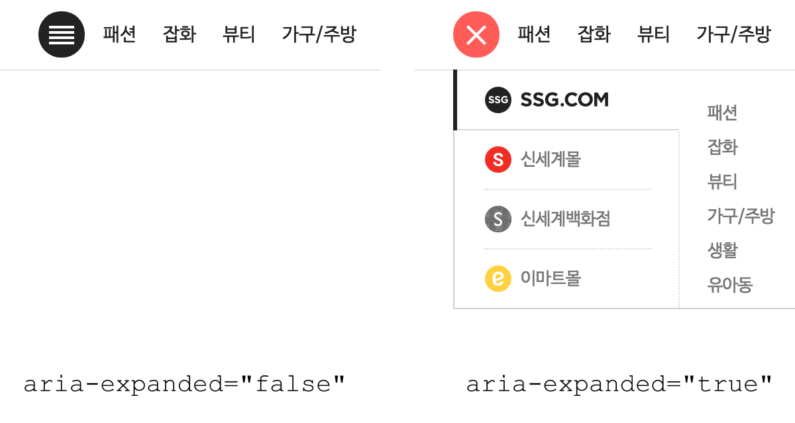
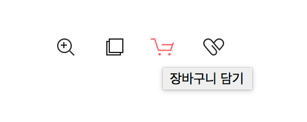
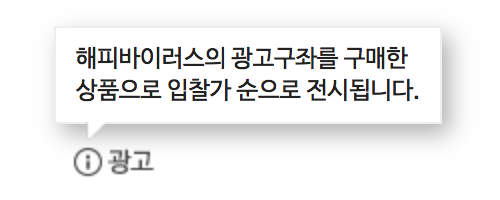
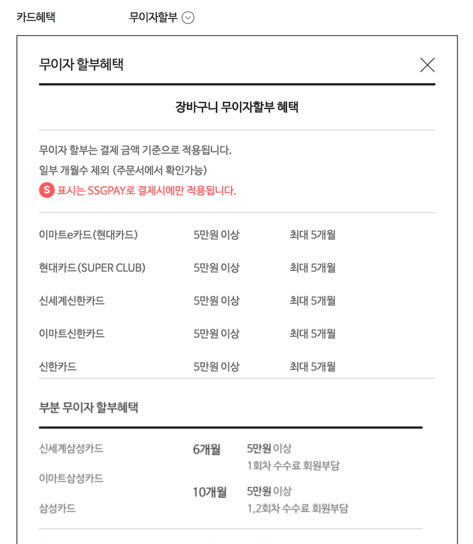

#a11y 웹 접근성 개선
improving web accessibility
2018. 12. 13
IT 개발2팀 UI파트
The Agenda
- 카테고리 (Navigation)
- 레이어 팝업 (Modals)
- 툴팁 (Tooltip)
카테고리 (Navigation)
기존 방식
마우스오버 시 하위 메뉴 열림
키보드만으로 조작하기 위해 초점 이동 시 동일하게 구현
$('.ctg_mall_lst').on('mouseenter focusin', '.ctg_top_mn', function(e){
// open sub menu
});
카테고리 항목이 늘어나면..🤔
스크린리더기에 의존하는 사용자, 마우스를 사용할 수 없는
키보드 사용자에게 이러한 기능은 오히려 더 역효과
초점이동 → 컨텐츠 탐색을 위한 이동
초점을 이동 하거나 마우스를 올리는 것은
항상 기능을 실행하기 위한 의도로 보기 어려움
- 의도하지 않은 기능 실행
- 의도하지 않은 정보 인식
- 정보의 선택권 보장 X
웹 접근성 지침
| 원칙 3 | 이해의 용이성 |
| 3.1 | 가독성 |
| 3.1.1 | 기본 언어 표시 (주로 사용하는 언어를 명시해야 한다) |
| 3.2 | 예측 가능성 (콘텐츠의 기능과 실행결과는 예측 가능해야 한다) |
| 3.2.1 | 사용자 요구에 따른 실행 - 사용자가 의도하지 않은 기능 (새 창, 초점 변화 등)은 실행되지 않아야 한다. |
| 3.3 | 콘텐츠의 논리성 (콘텐츠는 논리적으로 구성해야 한다) |
| 3.3.1 | ... |
접근성 향상
사용자가 의도하지 않는 기능이 자동으로 실행 되지 않도록 개발
- 초점이동 → 기능 실행 NO
- Enter 입력 → 하위 메뉴 확장
- 하위 메뉴 확장/축소 시 적절한 피드백 제공
WAI-ARIA
- W3C WAI-ARIA는 HTML의 접근성 문제를 보완하는 W3C 명세
- 스크린리더 사용자들이 웹 콘텐츠를 쉽게 이용할 수 있도록 방법을 정의
- HTML 요소에 role 또는 aria-* 속성을 추가
- 콘텐츠의 역할(roles), 상태(states), 속성(properties) 정보를 보조기기에 제공
WAI-ARIA 참고 사항
- HTML 요소에 무분별한 사용 지양
- 대부분 HTML 요소와 속성을 의미 (사용 최소화)
- 사용하기 앞서 HTML5 요소로 대체 할 수 있는지 충분히 검토
카테고리 버튼
aria-haspopup="true" 요소에 팝업 또는 하위 메뉴(컨텍스트 메뉴)를 나타냄
aria-expanded="true|false 해당 메뉴가 열렸는지 닫혔는지 여부를 알 수 있음

$('button').attr('aria-expanded', 'true'); // 레이어 열기
$('button').attr('aria-expanded', 'false'); // 레이어 닫기
VoiceOver 테스트
의미에 맞는 HTML 사용
- a 요소는 Enter 키만으로 실행
- button 요소는 Enter, Space 키로 실행 가능
- 스크린리더 사용자는 a 요소로부터 '버튼' 설명을 듣고 Space 키 사용 시 혼란
- 올바른 HTML의 선택은 사용자 경험과 접근성 측면에서 모두 중요
카테고리 레이어
- aria-hidden="true|false" 화면에서 숨기면 true, 화면에 표시하면 false
- true 값을 가지면 스크린리더 접근이 불가능 (포커스를 차단하지 않음)
// 레이어 열림
$('.ctg_total_layer').show().attr('aria-hidden', 'false');
// 레이어 닫힘
$('.ctg_total_layer').hide().attr('aria-hidden', 'true');
VoiceOver 테스트
카테고리 메뉴 (depth. 1)
- aria-label="string" 간결한 설명
- role="navigation" 연결된 페이지를 탐색하기 위한 링크 모음
- 속성을 사용하기 전 HTML5 <nav> 요소를 먼저 고려
카테고리 메뉴 이슈
- 두 가지 용도로 사용되는 메뉴
- 해당 메뉴 클릭 시 링크 이동, 마우스 오버 시 하위 메뉴 열림
- 초점 이동 후, Enter 키 입력 시 링크 이동 되는 문제 (하위 메뉴 접근 불가)
해결 방법
- 하위 메뉴 열기/닫기 버튼을 별도로 추가 (기본 숨김)
- 키보드 포커스 접근 시 버튼 노출 (탭 키 입력)
하위 메뉴 보기 버튼 추가
- a 태그 aria-label 몰 바로가기 설명 추가
- 키보드 포커스 접근 시, 하위 메뉴 보기 버튼 활성화
SSG.COM
$('.ctg_mall_lst').on('focusin', '.ctg_top_mn', function(e){
var welTarget = $(e.currentTarget);
welTarget.find('>.ctg_a11y_btn').show();
});
VoiceOver 테스트
카테고리 하위 메뉴 (depth. 2)
- role="menubar" 일반적으로 가로로 표시되는 메뉴 모음
- role="menu" 사용자에게(실행) 선택 목록을 제공하는 유형 (세로방향)
- role="menuitem" menubar 또는 menu 모음에 포함된 옵션 항목
VoiceOver 테스트
메뉴 닫기 (Esc key)
사용자가 키보드를 통해 메뉴를 닫을 수 있도록 기능 추가
$('.ctg_total_layer').on('keydown', function(e){
if (e.keyCode === 27) { // ESC
var aActiveMenu = $('.ctg_mall_lst').find('li.on');
var nActive = aActiveMenu.length;
if (nActive) { //활성화된 메뉴 닫기
var welCurrentMenu = $(aActiveMenu.get(nActive - 1));
welCurrentMenu.removeClass('on');
welCurrentMenu.find('.ctg_a11y_btn').removeClass('on').attr('aria-expanded', 'false');
welCurrentMenu.find('>a').focus();
} else { //카테고리 레이어 닫기
$('.ctg_total_layer').hide().attr('aria-hidden', 'true');
$('.ctg_open_btn').removeClass('on').attr('aria-expanded', 'false').focus();
}
}
});
최종 결과물
레이어 팝업 (Modals)
기존 방식
- 버튼 클릭 → 레이어 팝업 열림
- 레이어 팝업이 활성화되면 나머지 부분은 일반적으로 흐리게 표시
- 외부 컨텐츠와 상호작용 불가능 (본문 차단)
- 레이어 팝업에 집중
- 작업이 끝나면 레이어 팝업 닫기
시각적으로는 모든 동작이 명확하고 사용자는 레이어 팝업과 상호작용
스크린리더 사용자
- 버튼 클릭 → 레이어 팝업이 열린다는 정보 인지 불가
- 본문 위 레이어 팝업을 띄웠지만 포커스는 여전히 본문에 위치
- 레이어 팝업 닫기 후, 다음 포커스의 위치
모든 사용자가 시각적으로 웹사이트를 볼 수있는 것은 아니므로 접근성 개선 필요
접근성 향상
- 버튼, 레이어 팝업 → 레이어 팝업을 예측 할 수 있는 적절한 피드백 제공
- 초점의 논리적 이동 → 활성화 시 레이어 팝업 내 포커스 이동,
열려있는 동안 내부에서 포커스 트랩 (외부로 탐색 제한) - 레이어 팝업 닫기 → 열리기 전 마지막 위치했던 포커스로 이동
적절한 의미 제공
레이어 팝업 버튼
- aria-haspopup="true" 요소에 연결되어 있는 팝업(메뉴, 대화상자) 정보를 제공
- [false|true|menu|listbox|tree|grid|dialog] (ARIA 1.1)
레이어 팝업
- aria-modal="true|false" 요소가 모달인지 여부를 나타냄 (ARIA 1.1)
- aria-labelledby="ID" 속성을 통해 레이어 팝업 제목을 참조 (설명할 다른 참조 요소가 있을 경우)
- aria-describedbyon=ID" 레이어 팝업에 대한 설명을 제공
- <dialog> 요소를 지원하면 role="dialog" 대신 <dialog> 사용 (No support: Safari, Edge Mobile)
제목입니다.
초점의 논리적 이동
포커스 제어
기본적으로 div, h1 요소는 초점을 맞출 수 없음
tabindex 속성을 추가하여 포커스 가능
- tabindex="-1" 키보드 tab키를 눌러서 초점을 받을 수 없음. 스크립트 focus() 메서드 사용하여 포커스 가능
- tabindex="0" 요소에 포커스 가능. DOM 위치에 따라 순서대로 포커스 이동
- tabindex="1" 가장 먼저 초점을 받을 수 있음. 그러나 자연스러운 탭 순서를 방해 (안티패턴)
tabindex 테스트
레이어 팝업 열기
레이어 팝업을 포커스 가능하게 만들고 자바스크립트로 포커스를 지정
function showModal() {
$('#quick_view').show().attr('tabindex', '0').focus();
}
레이어 팝업 닫기
레이어 팝업이 닫히면 열기 전 활성화 된 요소로 포커스 반환
var welLastFocused;
function showModal() {
// 마지막 포커스된 요소 저장
welLastFocused = document.activeElement;
$('#quick_view').show().attr('tabindex', '0').focus();
}
function hideModal() {
// 마지막 포커스를 얻은 요소로 포커스를 반환
welLastFocused.focus();
$('#quick_view').hide().removeAttr('tabindex');
}
내부에서 포커스 트랩
열린 상태에서 포커스가 밖으로 나갈 수 없도록
레이어 팝업 내부에서 앞뒤로(tab/shift + tab) 포커스 트랩
function showModal() {
// ...
// 활성화 되는 동안 keydown 이벤트, 닫기 시 이벤트 제거
$('#quick_view').on('keydown', trapTabKey);
}
function trapTabKey(e) {
var aFocusable = $('#quick_view').find('*').filter('a[href], area[href], input:not([disabled]), select:not([disabled]), textarea:not([disabled]), button:not([disabled]), iframe, object, embed, *[tabindex], *[contenteditable]');
var firstTabStop = aFocusable[0]; // 첫번째 포커스 요소
var lastTabStop = aFocusable[aFocusable.length - 1]; // 마지막 포커스 요소
if (e.keyCode === 9) {
if (e.shiftKey) { // SHIFT + TAB
} else { // TAB
}
}
}
function trapTabKey(e) {
// ...
if (e.keyCode === 9) {
// 포커스 가능 요소가 없으면
if (!aFocusable.length) { e.preventDefault(); }
if (e.shiftKey) { // SHIFT + TAB (이전 포커스)
if (document.activeElement === firstTabStop) {
e.preventDefault();
lastTabStop.focus(); // 마지막 요소로 이동
}
} else { // TAB (다음 포커스)
if (document.activeElement === lastTabStop) {
e.preventDefault();
firstTabStop.focus(); // 첫번째 요소로 이동
}
}
}
}
다른 방법의 포커스 트랩
 // Content
// Content
$('#lastElement').focusin(function(e) { // 다음 포커스
$('#firstButton').focus(); // 첫번째 요소로 이동
});
$('#firstElement').focusin(function(e) { // 이전 포커스
$('#lastButton').focus(); // 마지막 요소로 이동
});
레이어 팝업 닫기 (Esc key)
사용자가 키보드를 통해 레이어 팝업을 쉽게 닫을 수 있도록 기능 추가
function trapTabKey(e) {
// ...
if (e.keyCode === 27) { // ESC
hideModal();
}
}
최종 결과물
툴팁 (Tooltip)
일반적인 툴팁
- 툴팁은 설명을 위해 사용 (누락된 정보 제공)
- 아이콘을 인식하지 못하거나 해독 할 수 없는 사용자는 정보가 누락
- 대부분의 경우 아이콘과 함께 텍스트를 제공
- 하지만 공간이 부족할 경우 툴팁 사용
기본 라벨
가장 먼저 툴팁 텍스트를 보조 기기가 접근 할 수있게 만드는 것
- 툴팁 요소에 role="tooltip" 으로 명시
- aria-labelledby 속성으로 연관된 컨텐츠와 연결

장바구니 담기
보조 설명
- aria-describedby 속성으로 연관된 컨텐츠와 연결

해피바이러스의 광고구좌를 구매한
상품으로 입찰가 순으로 전시됩니다.
VoiceOver 테스트
툴팁인척 하는 레이어?!
툴팁에 맞출것인가? 레이팝업에 맞출것인가?

작업하면 고민했던 내용
- 툴팁으로 맞추기는 좀.. 툴팁 내용이 너무 많음
- 그렇다고 레이어 팝업으로 대응하기엔 할게 너무 많음, 오버레이 배경 없음
- 포커스가 레이어안에 계속 존재 해야하는가? (포커스 트랩)
- 닫기 버튼을 어디에 위치 시킬것인가?
해결 방법
- aria-haspopup 속성을 이용해 접근성에 맞게 별도로 구성
- 레이어 팝업 (컨텐츠가 body 부분에 위치)과 달리 툴팁 버튼 아래에 내용이 위치 컨텐트의 논리성
- 닫기 버튼을 맨 처음에 위치하면 바로 닫을 수 있음 이건 esc키 추가시 어디에 위치해도 상관없음
- 닫기 버튼이 있으면 레이어 종료 시 해당 버튼으로 포커스 이동
레이어 형식의 툴팁
- aria-controls="ID" 속성은 현재 요소가 제어하는 대상을 명시
- <button> 요소가 무엇을 제어하는지 명시